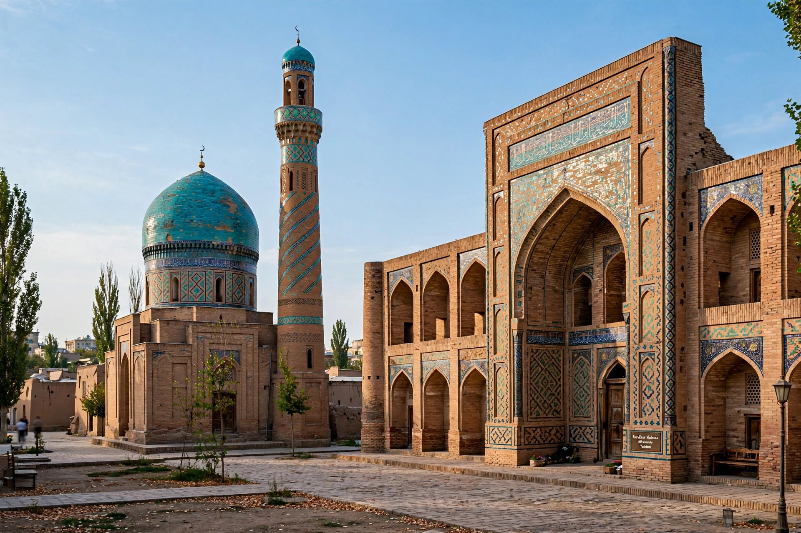

[Image placeholder: The Khast Imam complex in Tashkent's old city]| Country | Uzbekistan |
|---|---|
| Population | About 3 million |
| Name meaning | 'Stone city' (Turkic tash + Persian kand) |
| History | Ancient Silk Road oasis; destroyed by Genghis Khan 1219; rebuilt |
**Tashkent** is the capital and largest city of Uzbekistan, in the northeast of the country near the Chatkal Mountains and the Kazakh border. An oasis on the Chirchiq River and a caravan crossroads on the Silk Road between China and the West, it is Central Asia's largest city and its main economic and cultural centre.
Conquered by the Arabs in the eighth century and destroyed by Genghis Khan in 1219, Tashkent was ruled by Timurids, Shaybanids and the Kokand Khanate before Russia annexed it in 1865 and made it capital of Russian Turkestan. A catastrophic earthquake on 26 April 1966 levelled much of the old city; the Soviet Union rebuilt it as a model socialist city of wide avenues and panel housing, and Tashkent's metro (1977) — the first in Central Asia — is famous for its ornate themed stations. Landmarks include the Khast Imam complex (holding the Uthman Qur'an, claimed to be the world's oldest) and the TV Tower (375 m, Central Asia's tallest structure).
Since independence Tashkent has been the seat of Uzbekistan's government and its post-2016 opening under President Mirziyoyev: new business districts (Tashkent City), restored religious life, and regional diplomacy. The mahalla neighbourhood system and Chorsu Bazaar preserve older rhythms beneath the Soviet grid.